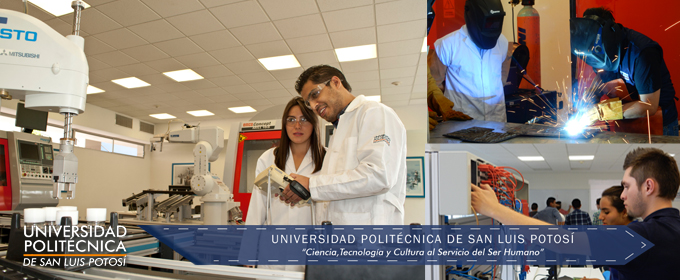
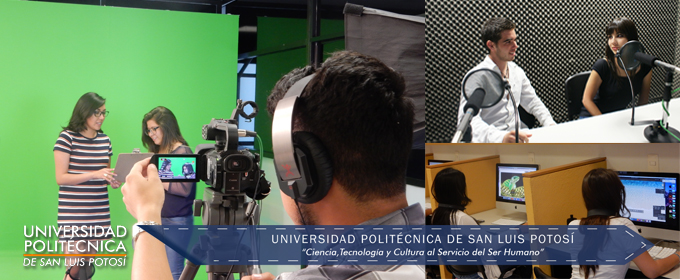
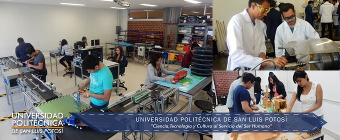
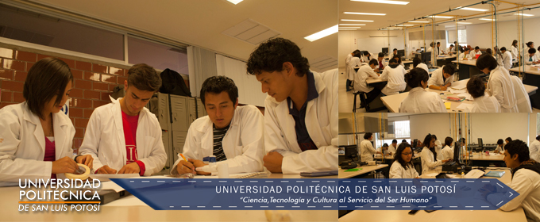
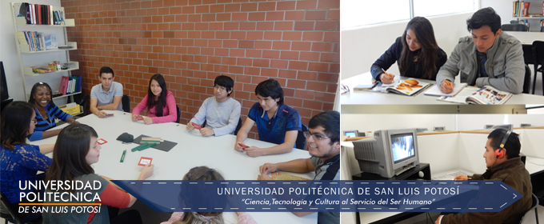

Centros y Laboratorios
CNT – Centro de Nuevas Tecnologías

En el Centro de Nuevas Tecnologías, se encuentran ubicados los laboratorios de especialidad para las carreras de Ingeniería en Telemática e Ingeniería en Tecnologías de la Información y tiene por objetivo ser complemento de los conocimientos adquiridos por los alumnos en sus materias,
desarrollando habilidades a través de la práctica y el uso de los equipos de los laboratorios especializados.
CMA – Centro de Manufactura Avanzada

CMA – Centro de Manufactura Avanzada es un edificio diseñado y habilitado especialmente para disponer de todas las tecnologías de automatización y control de procesos, de medición, máquinas-herramientas, soldadura y
plásticos que atiende las necesidades de prácticas y certificaciones de los estudiantes y se encuentra distribuido
CIMMA – Centro Integral De Mercadotecnia y Medios Audiovisuales

El Centro Integral de Mercadotecnia y Medios Audiovisuales (CIMMA), es un espacio creativo diseñado para desarrollar habilidades técnicas sobre producción de
medios audiovisuales y gráficos, donde el alumno aprenderá el uso de herramientas de software necesarias para la creación de piezas publicitarias.
Cuenta con una cabina de radio para grabación y edición de audio, un estudio de televisión y un centro de cómputo con plataforma MAC.
LABORATORIOS ISTI

Coordinación de Ingeniería en Sistemas y Tecnologías Industriales (ISTI)
Laboratorio de Ciencias

Actualmente, se concibe al Laboratorio de Ciencias como un ambiente de aprendizaje que enriquece las capacidades tanto conceptuales y procedimentales como actitudinales, por lo que se convierte en un espacio dinámico de aprendizaje donde el alumno puede adquirir nuevos
conocimientos a partir de la experimentación, por lo que deja de ser un lugar en donde sólo se comprueban ciertos aspectos abordados en el aula.
CADI

La Universidad Politécnica de San Luis Potosí establece como requisito de titulación la certificación del dominio del idioma inglés por la Universidad de Cambridge, Inglaterra.
El Consejo Británico dio su aprobación para que la Universidad Politécnica de San Luis Potosí se convirtiera en Centro Examinador para aplicar los exámenes de la Universidad de Cambridge.
La Universidad Politécnica de San Luis Potosí cuenta con un centro para el aprendizaje del idioma inglés (CADI) que ofrece al estudiante la oportunidad de desarrollar las habilidades de este idioma de manera autónoma,
mediante el uso de métodos y tecnologías que permiten realizar procesos de estudio en forma auto dirigida.
Este centro pone a disposición de los estudiantes una gran variedad de recursos y herramientas y métodos didácticos apoyados en nuevas tecnologías para lograr un alto dominio del idioma inglés
organizadas por niveles de manera que puedan ser utilizadas en función de necesidades individuales de aprendizaje y certificación del
dominio del idioma en: Key English Test (KET), Preliminary English Test (PET) y First Certificate (FCE), por parte de la Universidad de Cambridge.